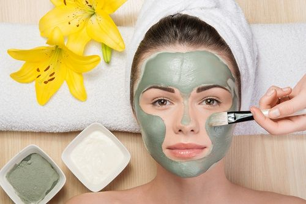

"Benefícios da limpeza de pele
Postado por Kelly Gonçalves 5 Benefícios da limpeza de pele
1.AJUDA A PREVENIR O SURGIMENTO DECRAVOS E ESPINHAS...
2.RETIRA AS CÉLULAS MORTAS DO ROSTO E FAZ UM DETOX NA PELE. ...
3.AJUDA A CONTROLAR A OLEOSIDADE EXCESSIVA NO ROSTO. ...
4.SUAVIZA E UNIFORMIZA A PELE. ...
5.PREVINE AS RUGAS E LINHAS DE EXPRESSÃO.